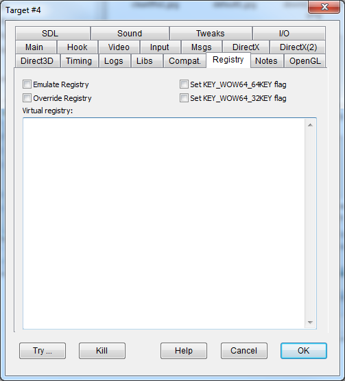
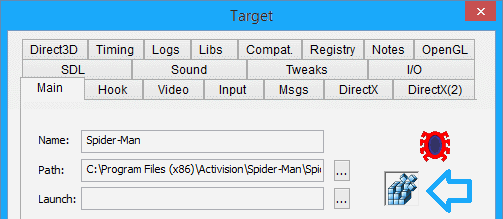

|
Emulate registry |
EMULATEREGISTRY |
Intercepts registry read operations so that missing entries are filled in by the values in the DxWnd.reg file. |
|
Override registry |
OVERRIDEREGISTRY |
Intercepts registry read operations so that missing and existing entries are filled in by the values in the DxWnd.reg file. |
|
Set KEY_WOW64_64KEY flag |
WOW64REGISTRY |
Set the KEY_WOW64_64KEY value in registry system calls so that they are forced to search in the native 64-bit section of the registry in 64-bit platforms. |
|
Set KEY_WOW64_32KEY flag |
WOW32REGISTRY |
Set the KEY_WOW64_32KEY value in registry system calls so that they are forced to search in the 32-bit section of the registry in 64-bit platforms. |
This area allows you to record virtual registry keys for the hooked program, in a text format similar (but not identical) to the one used by registry tools like regedit or regwin32. If the "Emulated registry" flag is set, these keys/values will be read whenever they can't be retrieved from the actual registry. If the "Override registry" flag is set, these values will be used even if corresponding values already exist in the actual registry.
Note: in the virtual registry text DxWnd allows the usage of the special token \{path} that is replaced with the game execution folder. This makes it possible to write relocatable registry scripts that will work no matter where the program is installed.
IMPORTANT NOTE: DxWnd gets the virtual registry from the SAVED dxwnd.ini file, so you must save these settings before any changes can take effect.
If you save a configuration with any text in the Virtual registry, the Main tab will add an icon with an appearance of a stack of blue cubes to the immediate right of the Launch field:
